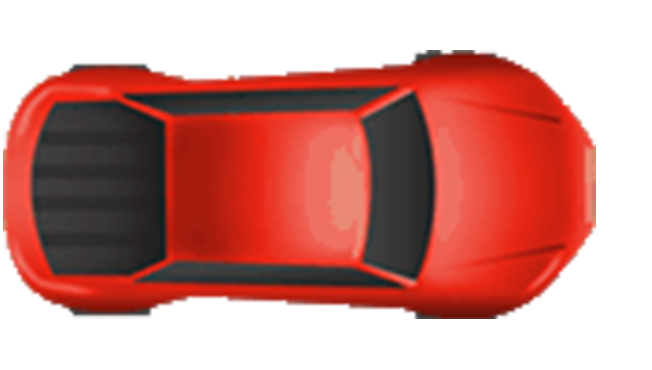

Ako prvé vojde do križovatky červené auto, keďže je na hlavnej ceste a modré vozidlo mu dáva prednosť (pravidlo pravej ruky)
Ako druhé vojde do križovatky modré vozidlo a za ním čierne vozidlo, keďže žlté vozidlo musí dať prednosť všetkým. Žlté vozidlo vstúpi do križovatky, ako posledné.